soilcnn maps a soil property from point observations and a stack of aligned rasters. A point-based model reads the covariates under each point. The convolutional network here reads the neighbourhood around it, at one or two window sizes, and everything around the network is there to keep the result honest:
- spatial folds with a buffer;
- a frozen test set;
- a noise floor measured from the seeds;
- conformal intervals, calibrated three ways and each checked on the test set;
- the area where the map may be believed.
This vignette walks the whole chain, from preparation to interpretation. The numbered sections explain the reusable workflow; headings marked Application example show how it is used for SOC stocks in Latin America and the Caribbean.
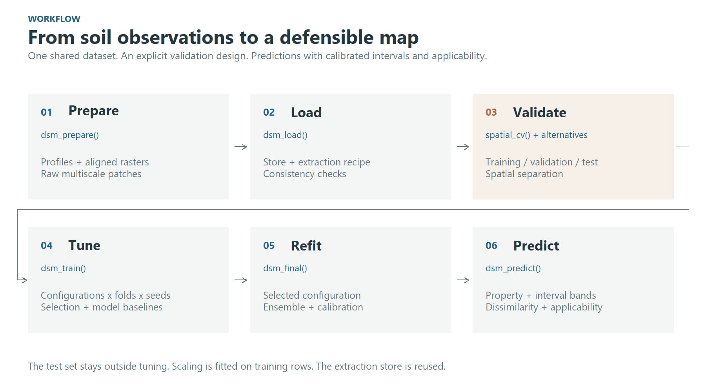
Figure 1. The workflow keeps data preparation, validation, tuning and final prediction explicit.
1. Prepare and load the patch store
dsm_prepare() reads the points and every raster in a
folder, runs the quality control, classifies the predictors, and cuts a
patch around each point at every window you ask for. It writes all of
that as a store, together with a recipe (the target transform,
the QC rules, the predictor types), so later steps need only the
store.
store <- dsm_prepare(
points = "profiles.gpkg", # an sf object, a data frame, or a file sf reads
target = "soc_stock",
raster_dir = "predictors/", # aligned single-band rasters, one per predictor
windows = c(3, 9, 15), # in pixels: 0.75, 2.25 and 3.75 km at 250 m
out_dir = "outputs",
transform = "log1p", # the space the network trains in
target_min = 0
)windows is required. A window’s ground extent is its
width times the resolution, so no default would be right at every
resolution.
data <- dsm_load(store)dsm_load() opens the store and reads its own tables. It
refuses a store whose recipe does not fit together. It also refuses one
whose manifest says the extraction did not finish.
The figures come from a real application: soil organic carbon stocks at 0-30 cm over Latin America and the Caribbean, from about 26,000 profiles and 174 predictors at a nominal 250 m resolution. The completed extraction store contains 25,887 profiles. The geographic raster grid has latitude-dependent ground dimensions.
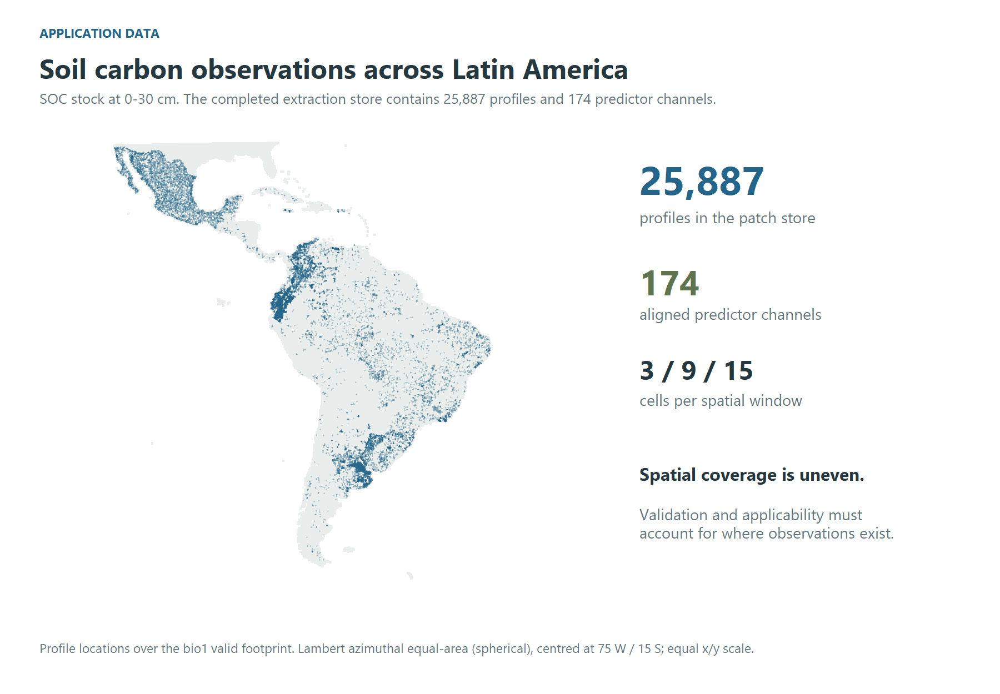
Figure 2. The full application dataset: profile locations and the predictor footprint. Uneven coverage motivates spatial validation and applicability diagnostics. The map uses a spherical Lambert azimuthal equal-area projection centred at 75 W / 15 S, with equal horizontal and vertical scales.
2. Understand the multiscale inputs
The network reads a stack of predictor channels around each profile. The illustration below uses separate high-resolution rasters at one of the application’s profiles, in south-eastern Brazil: NDVI, elevation and clay, aligned on a 0.00025-degree grid (approximately 25.7 m east-west by 27.7 m north-south at this latitude). These inputs illustrate the patch concept; they were not used to train the 250 m application described above.
The top row shows approximately 4 km of landscape with nested window outlines. Below it, the 3 x 3, 9 x 9 and 15 x 15 windows are enlarged to the same display size. Their ground footprints are approximately 77 x 83 m, 231 x 249 m and 385 x 415 m, respectively. Landscape panels and local patches have separate colour ranges, shown by their own bars, to reveal variation at both extents. The three window sizes share one range within each channel.
Source resolution, units and provenance
Fine grid spacing does not imply equally fine original information in every predictor. The clay source is SoilGrids 2.0, whose source predictions are at 250 m; alignment on the 28 m grid does not add independent fine-scale soil information. Clay is in g/kg, as documented by ISRIC. Elevation is in metres (EDTM version 1.1). NDVI is dimensionless.
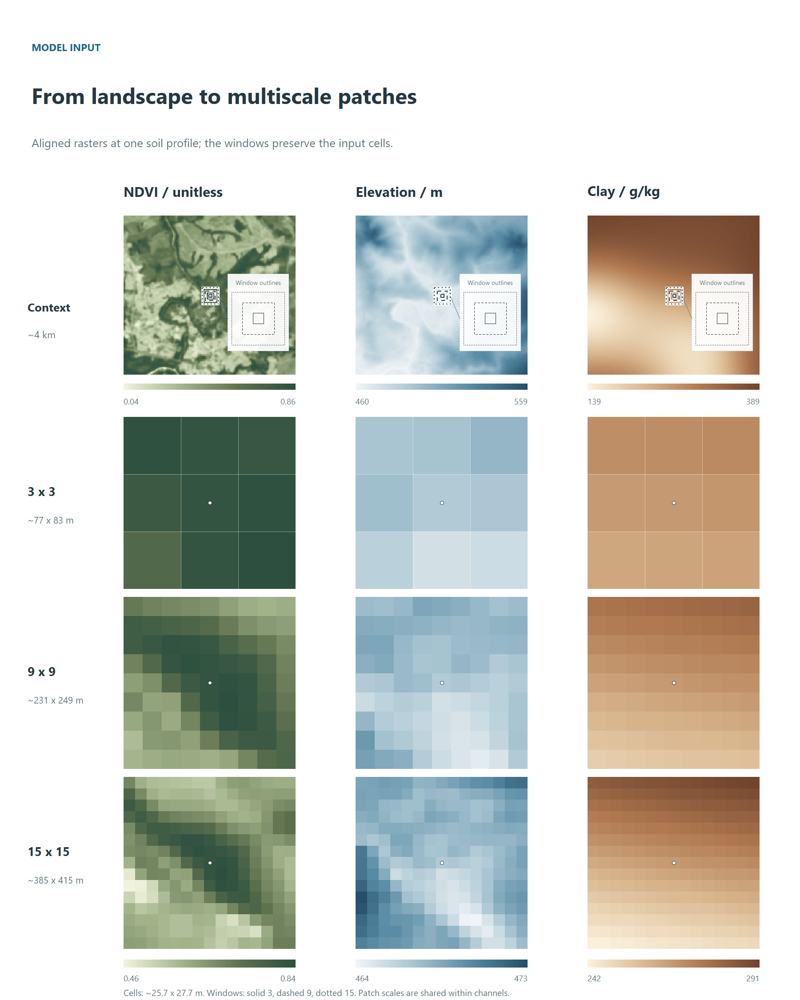
Figure 3. Landscape context and native-cell windows from the high-resolution example. The marker identifies the central cell. Bars show source raster values; elevation and clay labels are rounded for readability. Window outlines are enlarged in the detail, using solid (3), dashed (9) and dotted (15) borders. This illustration is separate from the 250 m trial.
A two-branch configuration learns a representation at each scale and combines them through a learned gate. This diagram shows the concept; the tuning grid also includes single-scale models and alternative fusion strategies.
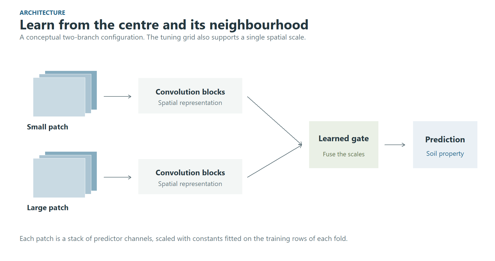
Figure 4. Conceptual multiscale architecture. Predictor scaling is fitted on the training rows of each fold.
3. Decide who trains and who scores
This is the most consequential line of the chain.
cv <- spatial_cv(k = 5, block_size = "auto", buffer = "auto", test_frac = 0.15,
calibration_frac = 0.15)“auto” means measured:
- the block size comes from how these points are spread;
- the buffer is the largest window times the resolution. That is the exact distance at which two patches stop sharing a pixel.
calibration_frac sets aside a second held-out set,
carved like the test set in whole blocks and behind the same buffer: no
fold trains or validates on it, and the final model only predicts it.
Its residuals calibrate the split conformal intervals of Section 7.
Leave it at 0, the default, and the intervals are calibrated on the
folds alone.
The other designs are one line each, and everything downstream is unchanged:
random_cv(k = 10) # ignores geography, on purpose
holdout_cv(validation_frac = 0.2) # a single split
region_cv(group = data$points$biome) # leave one region out
knndm_cv(k = 5, predpoints = prediction_sample(terra::rast("predictors/elev.tif")))knndm_cv() shapes the folds so that the distance from a
validation point to its nearest training point is distributed like the
distance from a map pixel to its nearest training point. It needs a
sample of where the map will be drawn, and it needs the CAST and sf
packages.
The five panels below show the plans of the application run on 2,872 profiles, a tenth of the store, with one test set and one calibration set shared by all five designs. Each panel is fold 1: training, validation, calibration, test, and the profiles that fold leaves out. They illustrate how the designs split the data, not how the models perform. The spatial blocks, measured from how these profiles are spread, are 5 degrees.
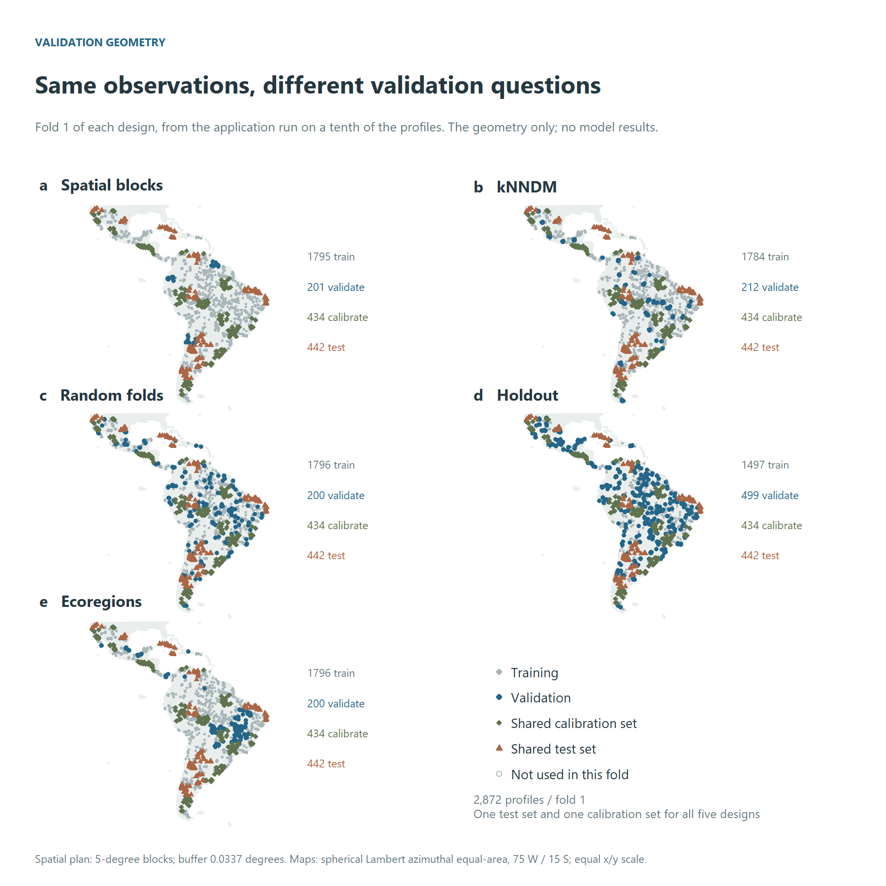
Figure 5. Validation geometry: fold 1 of each design, with one test set and one calibration set for all five. Hollow points are not used in this fold. All panels use the same equal-area projection and extent.
Random folds do not enforce geographic separation, so nearby observations can appear in training and validation. Spatial blocks and region-based plans introduce geographic separation; kNNDM targets the nearest-neighbour distance distribution faced during prediction. Each design asks a different validation question. Their relative scores must be measured in a completed experiment.
The exclusion buffer is easier to see locally. The next illustration uses fold 1 of the full spatial plan, whose buffer is 0.0337 degrees (about 3.7 km, the width of a 15 x 15 window) in the Chebyshev metric. The shaded square protects one validation location; every validation and test location has one, and so does every calibration location when the plan carves one.
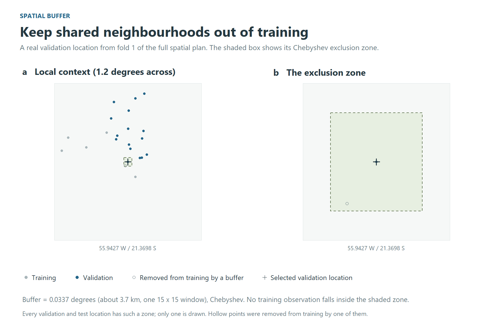
Figure 6. The buffer in the full spatial plan. Grey training points stay outside the shaded exclusion zone; hollow points were removed from training by a buffer.
A plan is worth looking at before a night is spent on it:
plan <- resolve_resampling(cv, data)
print(plan)4. Tune
fit <- dsm_train(
data,
model = "cnn",
resampling = plan,
tune_length = 30, # a budget, as in caret, not a lattice
n_seeds = 3, # what turns "A beat B" into a claim with an error bar
output_dir = "outputs/tuning"
)
fit$by_config # mean and sd, one row per config
print_noise_floor(seed_noise_floor(fit$comparison))
print_one_se(one_se(fit$by_config)) # the simplest config within one SEThe grid is drawn over the windows the store holds: every window alone, and every pair. The batch sizes are ones the smallest fold can fill. The predictions are scored in native units through the inverse of the store’s own transform.
Tutorial example: choosing a supported level of complexity
The best validation mean is not necessarily the selected model. For
CCC, one_se() subtracts the best configuration’s standard
error from its mean, then selects the configuration with the fewest
parameters among those whose mean reaches that threshold. Error-bar
overlap does not determine eligibility, and the rule is not a test of
statistical equivalence.
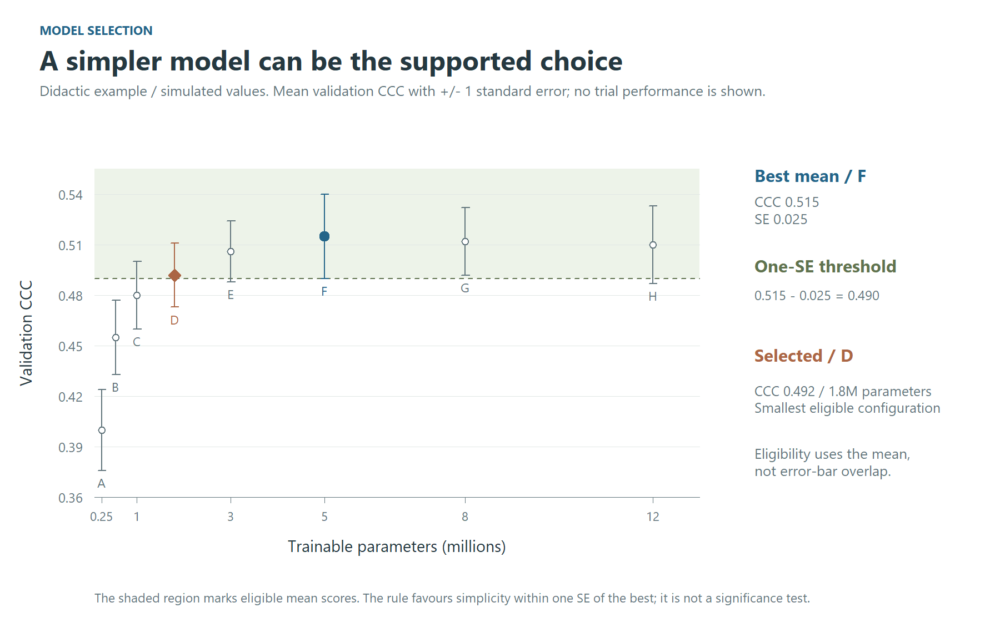
Figure 7. A didactic, simulated example of the one-standard-error rule. F has the highest mean; D is the smallest configuration above the 0.490 threshold. Bars show plus/minus one SE. These values are not results of the SOC application.
The simulated values illustrate how to read the selection. For a
completed run, use fit$by_config for the actual means,
standard errors and parameter counts; the frozen test set stays outside
this decision.
Application example: model selection
In the application, the spatial design’s thirty configurations fall
as in Figure 8. The best mean, cfg_005 at a CCC of 0.341,
is not the choice: its standard error puts the threshold at 0.317, and
15 configurations reach it. The rule takes the smallest of them,
cfg_008 (one 9 x 9 window, 0.60 million parameters), 3.8
times fewer parameters than the best for a CCC 0.013 lower. The seed
noise floor is 0.050; interpret it as training variability, separately
from the uncertainty of the paired difference between
configurations.
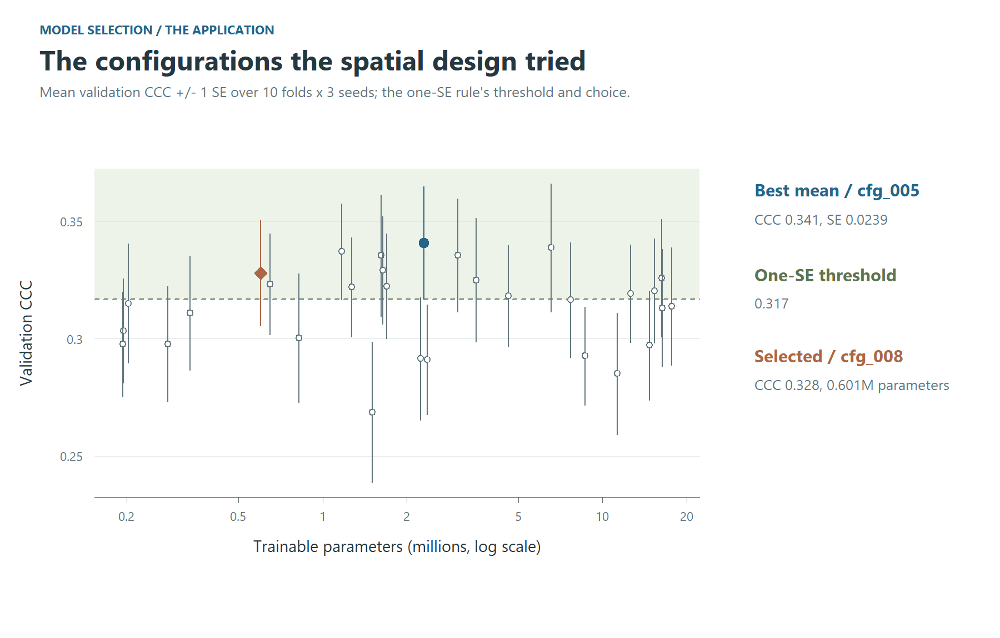
Figure 8. The configurations the spatial design tried in the application, with the one-SE threshold and the configuration it selects.
5. The baselines that give the number a scale
Train them under the same plan, so the comparison is between models and not between experiments:
rf_context <- dsm_train(data, model = "rf", resampling = plan,
features = c("centre", "window_mean"), tune_length = 4,
output_dir = "outputs/tuning")
rf_point <- dsm_train(data, model = "rf", resampling = plan,
features = "centre", tune_length = 4, output_dir = "outputs/tuning")Compare the CNN with rf_context to assess whether
learning spatial arrangement adds predictive skill beyond neighbourhood
summaries. A small gap does not establish how the convolution works: it
indicates that an additional gain has not been demonstrated under this
design. Evaluate the paired difference on the same profiles, with
uncertainty estimated by whole spatial blocks. Variation between seeds
provides a separate check on training stability; it is not the
uncertainty of that paired difference.
The same plan runs any of caret’s ~230 methods:
caret_available("^xgb")
register_model(caret_spec("xgbTree"))
xgb <- dsm_train(data, model = "xgbTree", resampling = plan, tune_length = 4,
output_dir = "outputs/tuning")6. The test set, once
The test set is carved out when the plan is made, and nothing scores it while a configuration is being chosen. Record the choice first, then score the test set:
freeze_selection(fit$run_dir, config_id = one_se(fit$by_config)$config_id[1])
score_test_grid(fit$run_dir, data, device = setup_torch_device())score_test_grid() refuses to run before
freeze_selection(), and it prints both timestamps.
Application example: validation designs on one test set
The five designs of the application, each carried to its final model,
meet on one test set (Figure 9). The profiles come in clusters, so the
interval of a difference in error is drawn from whole blocks
(block_bootstrap()), not from profiles one by one. Every
design’s model errs by 24.1 to 25.8 t/ha on the same profiles; against
the spatial design the differences are -1.7 to -0.6 t/ha, and none of
the intervals excludes zero – though, drawn profile by profile, those of
the random folds and the holdout would. What the designs differ in more
is what they promised: the cross-validated CCC of the random folds was
0.58 against 0.46 on the test set, while the spatial blocks’ 0.33
understated it (0.51). A design is judged by how close its estimate
comes to the test, not by how good the estimate looks.
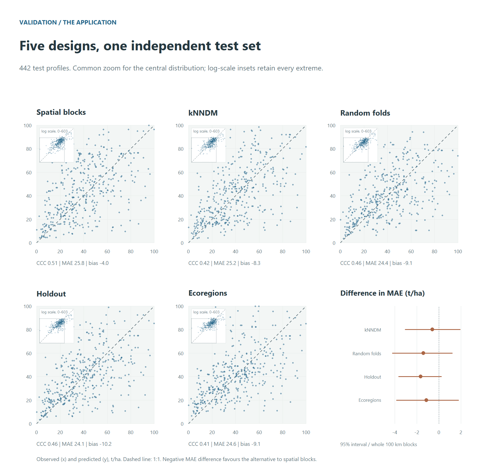
Figure 9. Each design’s final model on the same test profiles. Main panels share a zoom covering the central distribution; the insets show every profile on log scales, their dotted square marking that zoom. Metrics use all profiles. The MAE differences relative to spatial blocks have 95% intervals from whole 100 km blocks.
7. Refit the chosen configuration
final <- dsm_final(fit, seeds = 10)dsm_final() refits the configuration the tuning run
selects under ten seeds, side by side. It writes
final_report.md, which declares every hyperparameter of the
chosen network and whether the search chose it.
It also calibrates the conformal intervals, three ways, and checks each on the test set:
-
cv: on the tuning run’s cross-validated residuals. It costs nothing and promises nothing, since the configuration was chosen on those folds. -
split: split conformal, on the calibration set. Coverage is at least the level asked for, for points exchangeable with that set (Lei et al. 2018). -
cv_plus: CV+, with each fold’s own model at the new point (Barber et al. 2021). Coverage is at least1 - 2 alpha - sqrt(2/n), and close to the level in practice. It costs one more pass of the network per fold model.
Each method is computed at a constant width and at one that grows with the predicted level and the dissimilarity index. The quantile can also weigh every block alike instead of every point (Dunn et al. 2023): a dense survey then stops setting the width for everyone. Clustered profiles, and a configuration chosen on the folds, bend all three guarantees. So the test set is the judge, reading coverage overall, by block, inside and outside the area of applicability, and by level:
final$per_config[[1]]$intervals$summaryApplication example: coverage and interval width
In the application, the five designs’ final models were checked on the same test profiles (Figure 10). At a constant width, the split intervals, calibrated on points no model trained on, covered 93 to 95% in every design, as their guarantee says; the cross-validated ones 90 to 92%, and CV+ 91 to 95%. The width that follows the level and the dissimilarity index is 2 to 64% wider on average and covers less, 86 to 92%: it spends its width on the high stocks, which it covers (89 to 99% in the highest fifth of the predicted stock), and leaves the lowest fifth short (49 to 80%). Outside the area of applicability the coverage fell as low as 25%, on the few test profiles there (4 to 27 by design): there no calibration speaks for the pixel.
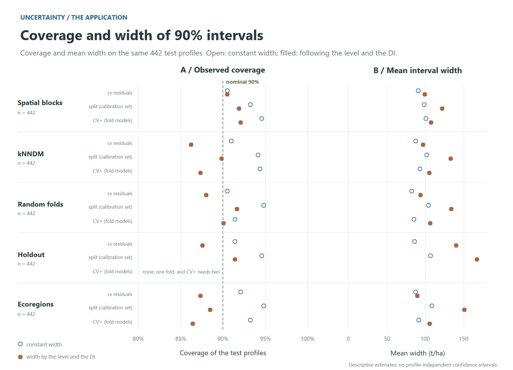
Figure 10. The 90% intervals of the five designs on the same test profiles: coverage against the nominal 90% level, and the mean width, for each calibration at a constant width and at one that follows the level and the DI.
8. The map
map <- dsm_predict(final, data, extent = c(-56, -50.5, -15, -13.8),
intervals = c("cv", "split"))
mapThe map is one VRT per band:
- the ensemble median, mean, sd, mad, min and max over the seeds;
- the smeared mean;
- the 90% conformal intervals, one pair of bands per calibration and
width, e.g.
pi90_split_level_di_lower; - the dissimilarity index and the area of applicability.
intervals = "cv_plus" adds the CV+ bands. Every fold
model then predicts every pixel, so the map costs several times more
network time.
bands.csv, beside the bands, says what each one is.
Before it maps, dsm_predict() runs a probe. It
predicts the profiles’ own pixels through the whole chain and compares
them with the final model’s stored predictions, so a wrong band order or
a wrong scaling stops the run in seconds instead of producing a
plausible map. Drop extent for the whole grid. The run
resumes where it stopped, and it refuses to continue if anything that
changes the numbers has changed.
Where the map may be believed
A map has a value at every pixel, including pixels whose predictor combination the model never met, and nothing in the raster tells them apart. The cross-validated error does not describe those pixels. The DI and AOA bands (Meyer & Pebesma, 2021) say where it does, and they belong beside the map, not in a footnote.
Application example: reading the final maps together
Interpret the predicted stock together with the width of its calibrated 90% interval and its area of applicability. A wide interval indicates less precise predictions; a pixel outside the AOA has predictor conditions beyond the applicability criterion derived from validation. The two diagnostics describe different aspects of reliability.
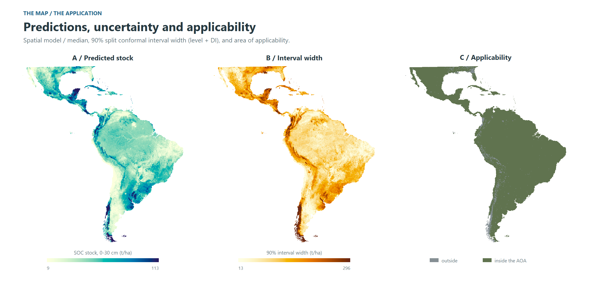
Figure 11. The application’s map: the ensemble median, the width of the 90% conformal interval, and the area of applicability. Continuous colour scales use the 2nd and 98th percentiles of the same regular sample used in the text, computed before reprojection; values beyond the limits are clipped for display.
The median ranges over 9 to 113 t/ha (2nd to 98th percentile of the cells), with the highest stocks in the Magellanic subpolar and Valdivian forests and the Yucatán forests, and the lowest in the Atacama, Monte and Baja California deserts. The interval is widest where the stock is high and where the dissimilarity index is high, as the scaled calibration intends: 13 to 296 t/ha. 96% of the area lies inside the AOA; the pixels outside are mostly in the far south and the high Andes – the Magellanic and Valdivian forests, the páramo, the Andean steppe – and in the Chocó, landscapes with few profiles, and there the interval’s coverage is not known, however narrow it is drawn. On the test profiles this 90% interval covered 92%.
9. What the model learned
themes <- read.csv2("importance_themes.csv")[, c("channel", "variable")]
perm <- dsm_importance(final, data, groups = themes)
shap <- dsm_importance(final, data, shap_importance(), groups = themes)
compare_importance(permutation = perm, shap = shap)
plot(shap)dsm_importance() takes the method as an argument, as
dsm_train() takes the validation design:
-
permutation_importance(): how much the model relies on a variable; withwithin =, what the variable adds beyond the place; -
context_importance(): how far from the point, and through which window, the network reads; -
shap_importance(): how each variable pushes each prediction, up or down; withat =points of the map, its maps (importance_map()); -
sage_importance(): how much of the skill each theme carries, a signal two themes share split between them; -
refit_importance(): whether a variable is needed at all, the seeds trained again without it; -
ale_effect(): how the prediction changes along each variable’s range.
With many correlated predictors, themes are the unit to read: a table
of yours (channel, variable) groups the
channels, and the channels of one categorical always move together.
rows = "folds" scores the tuning run’s fold models instead
of the final seeds, which is how two validation designs are compared on
what their models learned.
Every model must first give back, point by point, the predictions its run wrote, and a refit must first train a seed again and get them back. An importance measured on another model would look just as plausible.
Application example: importance by theme
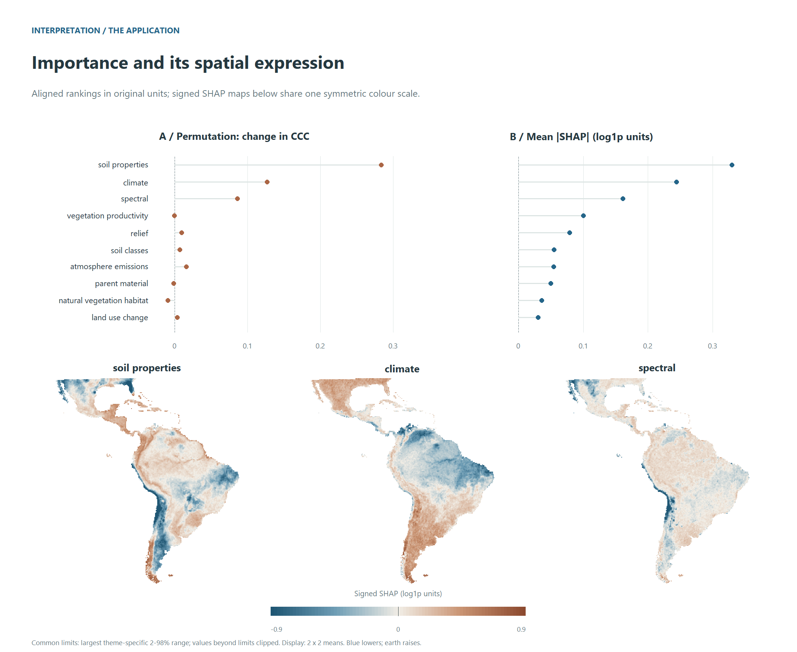
Figure 12. What the application’s model learned, by theme: the drop in CCC when a theme is permuted and its mean absolute SHAP value in separate panels with their original units, and signed SHAP maps on one shared scale for the leading themes.
The two methods answer different questions, and the application shows it. SHAP, which splits each prediction among the themes, ranks them almost the same way under every validation design (Spearman 0.95 to 1.00 between the designs’ rankings): the ranking of themes is stable across these designs. Similar rankings alone do not establish that the models learned the same spatial relationships. Permutation, which scores what the skill loses when a theme is broken, agrees less (0.42 to 0.93), most of all between the spatial and random designs: where correlated themes can stand in for one another, the drop from breaking one depends on what the model leaned on, and that is the part a design changes. Soil properties lead under both, then climate and the spectral bands, then vegetation productivity; under permutation the natural vegetation habitat shows no detectable contribution in any design. That does not establish that a theme is uninformative in other models, regions or samples. Read each ranking as a description of the fitted model, and agreement between designs as evidence of ranking stability under the validation choices examined.
A reference for your own run
Paths below are relative to the corresponding store or run directory.
| Stage | Object | Main output | What to check |
|---|---|---|---|
| Prepare and load |
store, data
|
recipe.rds,
patch_manifest.rds, patch_meta.csv
|
Completed extraction, predictor alignment and QC |
| Resolve validation | plan |
print(plan) |
Fold geometry, buffers and held-out sets |
| Tune and select | fit |
comparison/,
fit$by_config
|
Validation scores, seed variability and one-SE selection |
| Freeze and test | Selected configuration | Frozen selection and test scores in the run | Selection recorded before test scoring |
| Refit and calibrate | final |
final_report.md, interval summaries |
Hyperparameters, test coverage and interval width |
| Predict | map |
bands.csv, VRT bands |
Probe agreement, band meanings and applicability |
| Interpret |
perm, shap
|
Importance tables; maps from
importance_map()
|
Method, units, theme grouping and ranking stability |
About the illustrations
Profile locations come from the full SOC 0-30 cm application at 250
m. The input-patch illustration uses separate high-resolution raster
crops at one of its profiles. The model-selection plot of Figure 7 uses
simulated values. The continental validation panels of Figure 5 and
Figures 8 to 12 come from the application run on a tenth of the
profiles, in whole blocks stratified by region: its plans, its
selection, its five designs on one test set, its intervals, its maps and
its importances. The local buffer detail of Figure 6 comes from the full
spatial plan. The scripts that draw the figures are in the package’s GitHub repository, under
tools/; they read data and fold plans, and fit no
model.